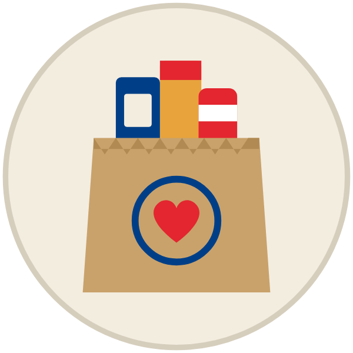
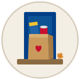
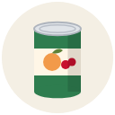
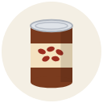
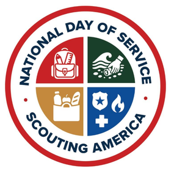

Rotterdam Scouts Food Drive
Every November, for the Rotterdam Community Center

How It Works
Every November, Scouts collect food for our neighbors
About a week before
Flier day
Cub Scouts leave fliers on doors in select Rotterdam neighborhoods. Got one from another Scout group? Follow its instructions.

Got our flier?
Leave it at the end of your driveway
Set a bag of food at the end of your driveway by 7 AM on drive day, and Troop 3054 Scouts will pick it up. A plastic bag keeps it dry.
Anyone can give
Drop it off at the RCC
Bring food to the Rotterdam Community Center, 705 Curry Rd, during drive hours. Scouts unload your car, then sort and count it all for the pantry.
Food only, please. We don't collect money.
What to Give
What the Rotterdam Community Center needs most

Canned fruit & veggies
Beans, any kind
Shelf-stable milkAny shelf-stable food helps. Unopened and in date, please. Nothing that needs a fridge or freezer, and no alcohol.
Where It Goes
Every can stays in our community
Almost everything goes to the Rotterdam Community Center. The holidays are a critical time of year for their pantry, and Scouts sort the food by type so it's ready for their shelves.
Some also goes to the Blessing Box pantry at Christ's Church of the Hills in Mariaville, which our troop has supported in past years.

The drive surrounds Scouting America's National Day of Service in November, when Scouts across the country serve their communities, with food drives leading the way.
Finding the RCC
Rotterdam Community Center · 705 Curry Rd, Rotterdam, NY 12306
On drive day, pull up at the front of the building and Scouts will take your donation right from your car.
Open in Google MapsScouts, families and leaders
The leader guide has the schedule, the flier and pickup routes, how sorting works, the safety rules, and the plan for spreading the word.
Read the leader guideQuestions? Contact the troop.
Want your kid in on this? Troop 3054 is open to ages 10 to 17, no tryouts, and grades K to 5 can join Pack 3054. Learn about joining
Brought to you by Troop 3054 and Pack 3054, Scouting America, with the Rotterdam Community Center.